My Top 5 Favorite Rhode Island Restaurants
Small state, BIG FLAVOR!! A humorous tagline that aptly describes the Rhode Island food scene. Despite being the smallest state in the country, its selection of great restaurants is robust.
I lived in Rhode Island for about two and a half years and during that time I was able to try a lot of what the state has to offer.
I want to share five of my favorites from RI!
My 6 Favorite and Reccomneded Restaurants Are:
- Den Den Korean Fried Chicken
Den Den Korean Fried Chicken
Den Den Korean Fried Chicken is a great Korean spot located off of Thayer Street, near Brown University.
Though named fro their fried chicken, they also offer a host of other delicious, casual Korean dishes from Kimbap to Beef Bulgogi and more. If you're touring the Brown cmapus or just in the area, I would heartily recommend dining in after.
Address: @ 182 Angell St. Providence, RI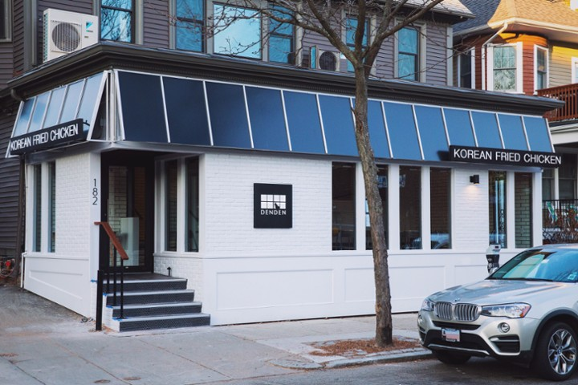
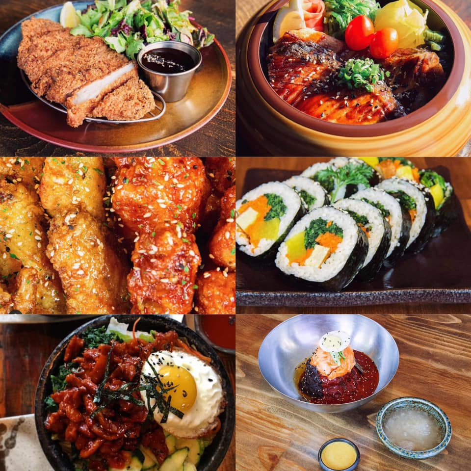
- Dolores
Dolores Providence
A little walk southeast of the Brown Campus, you will find Dolores, a contemporary Mexican restaurant in the Fox Point neighborhood.
Dolores menu features authentic and contemporary from the Mixteca regions of Puebla and Oaxaca in Mexico.
Featuring a variety of Moles, sauces, stews and hand pressed tortillas, Dolores offers a refreshing take on Mexican cuisine.
Address: 100 Hope St, Providence, RI
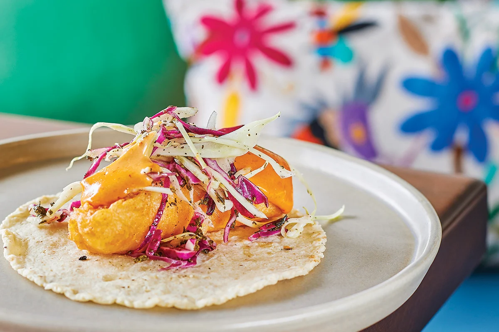
- Giusto
Giusto Newport
Down in the coastal town of Newport, among oyster bars and some farely mediocre beach food fare, there is a restaurant serving up creative and isnpired Italian dishes called Giusto.
Giusto, meaning "just right" in Italian serves its own "freestyle" version of this well known cuisine. I worked at Giusto for about a year and was able to make and learn a lot about their dishes and menu.
One of the most popular creations from Giusto is the Street Corn Ravioli.
All of the pasta is made in-house and they rotate through new pasta dishes every season, along with other offerings including crudos, salads, "snacks" and more!
Address: 4 Commeercial Wharf, Newport, RI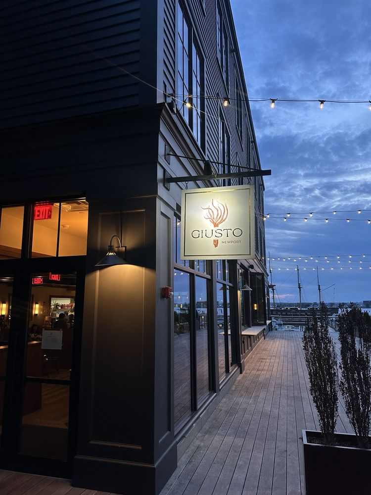
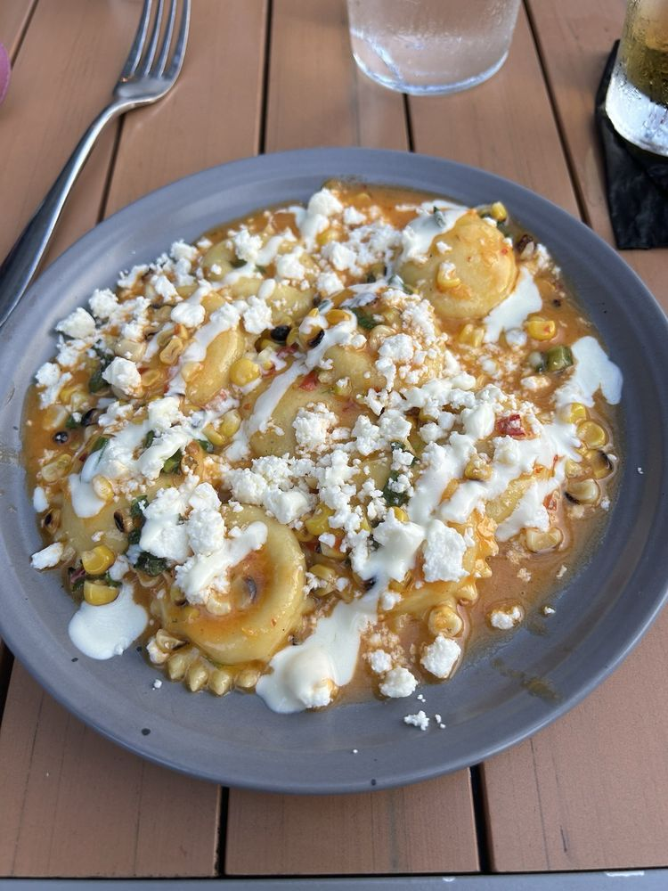
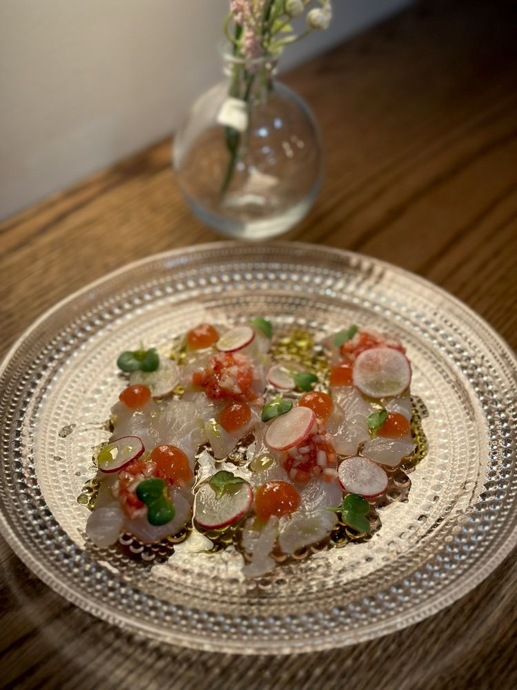
- Mother Pizza
Mother Pizzeria Newport
Giusto's sister restaurant, Mother Pizza also has some great Neopolitan style pizza and plenty of other tasty offerings. Admittedly,althoug I worked at Giusto, I have dined at Mother Pizza more since my family fell in love with the place and frequented it often.
Stick with classics like Margherita or their pepperoni pizza cheekily titled "If You Know, You Know", or try some of there fun seasonal offerings!
Address: 49 Long Wharf Mall, Newport, RI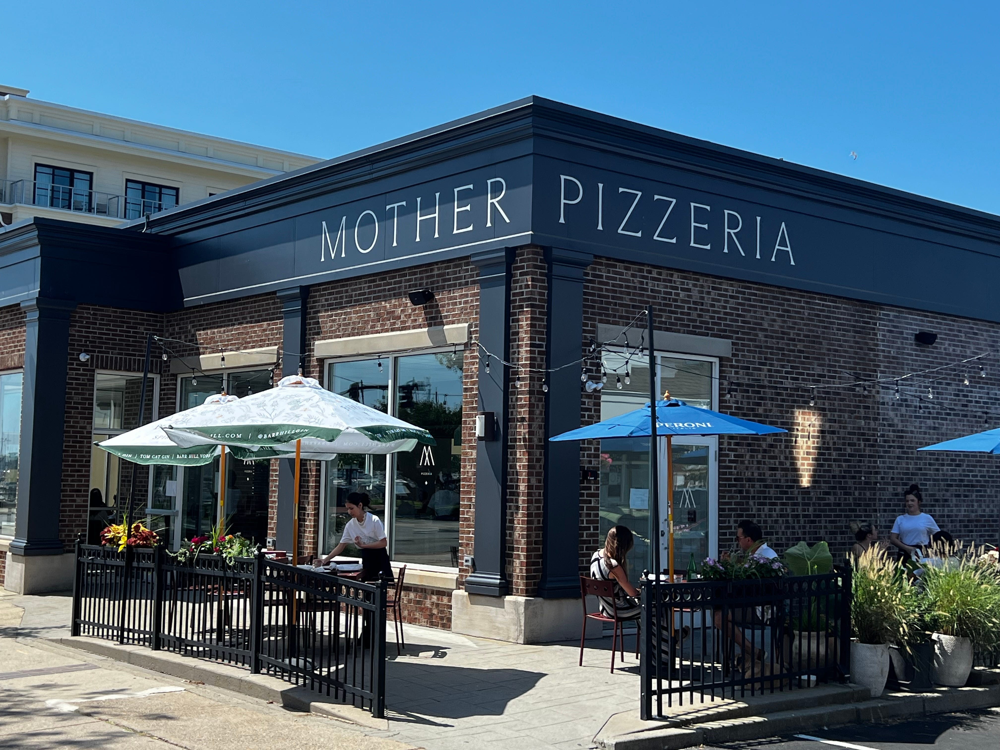
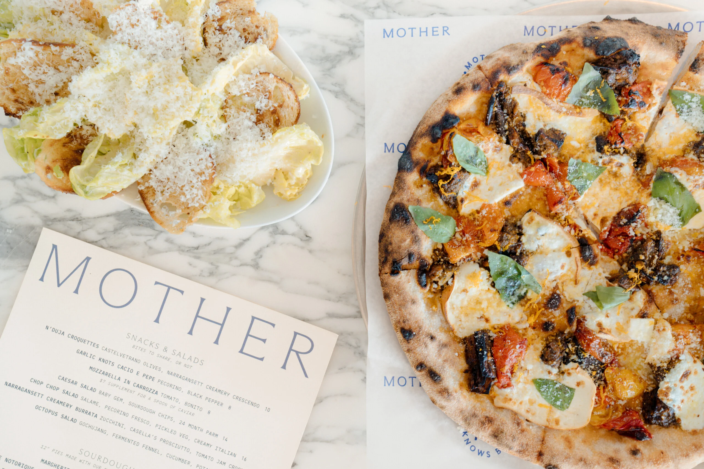
- There There
There There Providence
Heading back to Providece, in the West End neighborhood sits an unassuming diner with an old Coca Cola sign, serving some truly outstanding smash burgers. It's attention to detail paired with the food's delicious simplicity is part of what it makes their burgers so special.
I reccomned the classic Dreamburger, the Salt potatoes with pepperoncini butter, or for a unique vegetarian option: the Kale Roll, a play on the classic New England clam roll.
Address: 471 West Fountain St, Providence, RI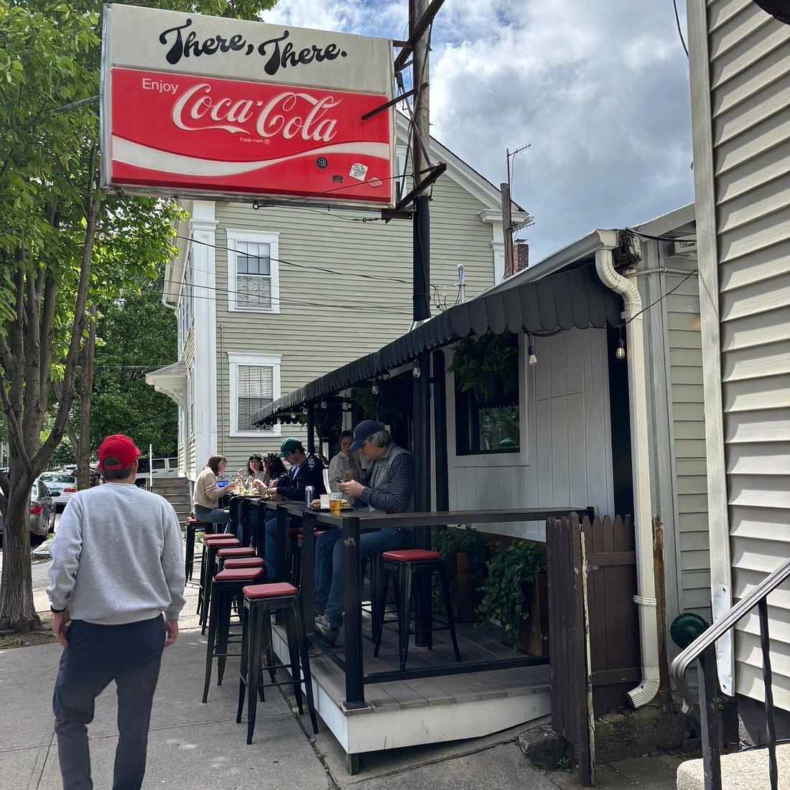
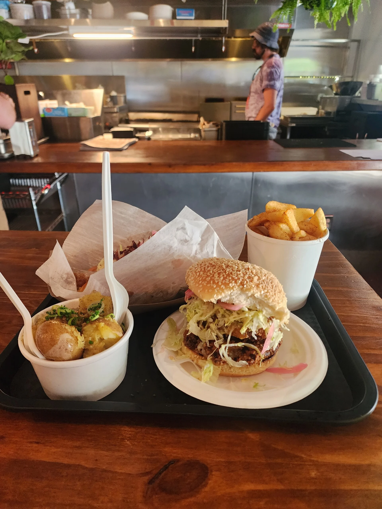
- Yagi Noodles
Yagi Noodles Newport
Lastly, another favorite spot of mine in Newport, Yagi Noodles is definitely worth a stop.
There ramen is great and they make their own noodles in house. One stand out item though was a aseasonal menu item of tempura battered zucchini flowers that were really unique!
Address: 20 Long Wharf Mall, Newport, RI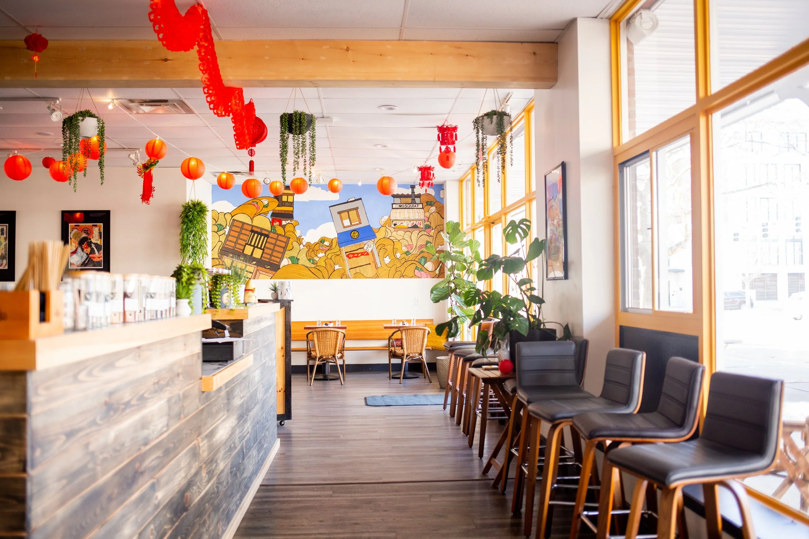
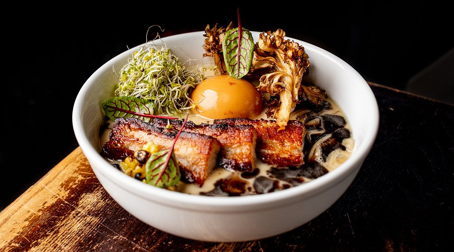